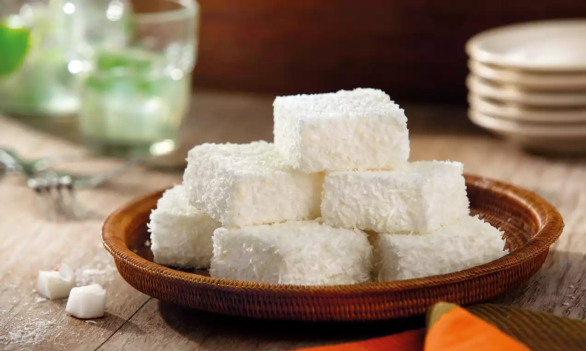

Maria-mole

Ingredientes
- 3 claras (105 g)
- 150 g de açúcar
- 1 pacote de gelatina em pó sem sabor
- 1 xícara (chá) de coco ralado
Modo de preparo
- Levar a clara e o açúcar ao fogo baixo, mexendo sempre, por 1 ou 2 minutos.
- Preparar a gelatina conforme as instruções do fabricante.
- Bater as claras em neve e adicionar a gelatina e o coco ralado.
- Levar para gelar antes de servir.